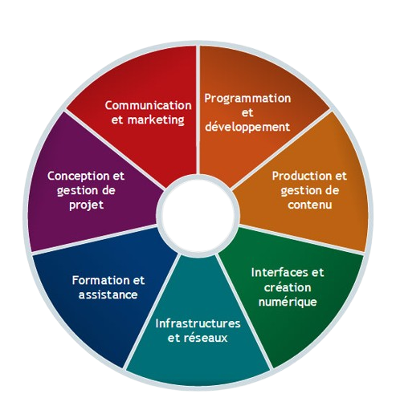

Présentation du BUT MMI 📜
Présentation et témoignages (Aix-Marseille Université) :
Le BUT MMI est un diplôme de l'enseignement supérieur proposé dans les Instituts Universitaires de Technologie (IUT) en France. Il vise à former des professionnels polyvalents dans le domaine du multimédia et de l'internet en intégrant les aspects techniques, créatifs et d'organisation. Le BUT MMI intègre une période de stage en entreprise, offrant aux étudiants l'opportunité d'appliquer leurs connaissances dans des contextes professionnels réels et découvrir le monde du travail.
Objectif du Diplôme :
Le BUT MMI propose trois parcours différents, accessibles dès la 2e année :
Comment intégrer ce BUT ?
L'admission en BUT MMI se fait sur la plateforme Parcoursup pour les candidats qui souhaitent entrer en première année. Le BUT métiers du multimédia et de l’Internet est accessible à tout titulaire d'un :
Que fait-on au cours de ce BUT ❓
Durée du Cursus :
La formation du BUT MMI s'étend généralement sur trois années universitaires , soit six semestres. Pour avoir une idée : le volume horaire global est d'environ 660h/an. ⇒ Les étudiants ont en moyenne 33h de cours par semaine.
Contenu de la Formation :
Périodes de stage visant à mettre en pratique les compétences acquises en milieu professionnel : Deux stages professionnels d'une durée totale d'environ 6 mois (de 22 à 26 semaines) sur les 2 dernières années.
Réalisation de projets concrets en équipe, souvent en collaboration avec des entreprises.
Matières enseignées
| Tronc Commun | Matières spécifiques au MMI |
| Bases en informatique et programmation | Conception graphique |
| Culture générale en multimédia | Développement web |
| Mathématiques appliquées | Audiovisuel et animation |
| Introduction au marketing | Gestion de projet multimédia |
Compétences acquises et débouchés 🧩
Compétences acquises
À la fin du cursus, les diplômés du BUT MMI sont généralement en mesure de :
Débouchés :
